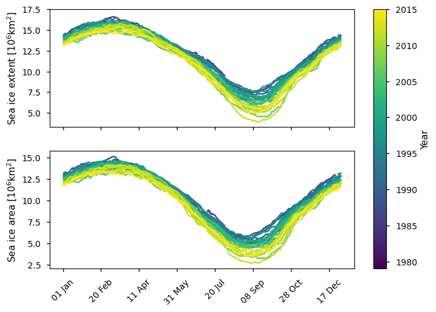
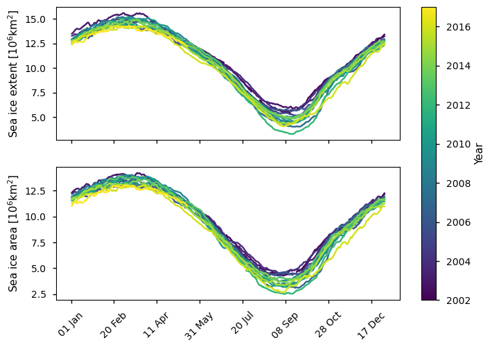
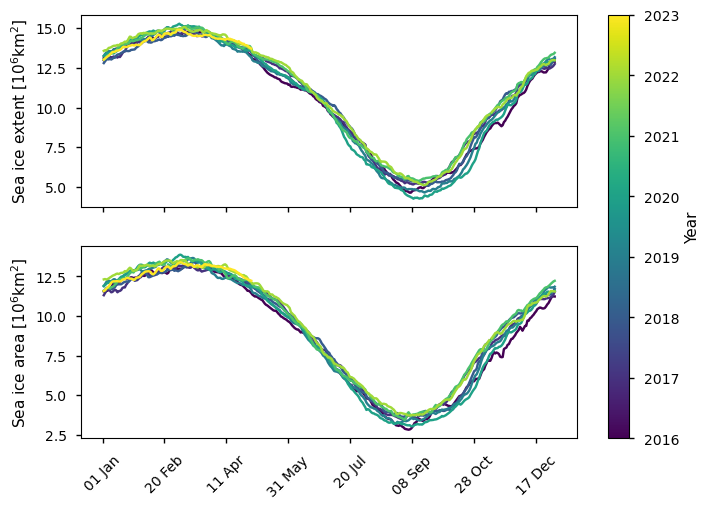
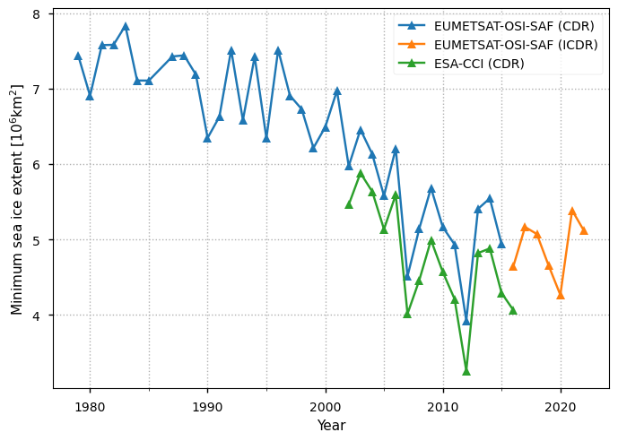
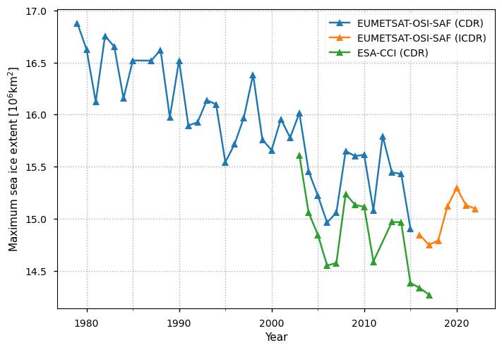
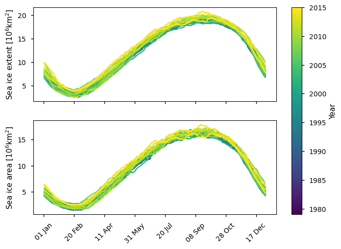
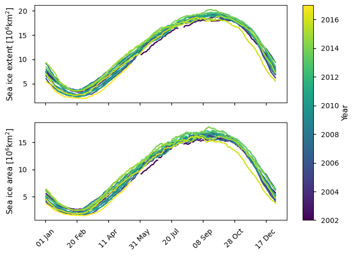
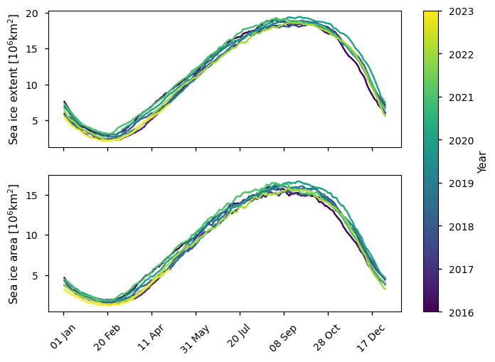
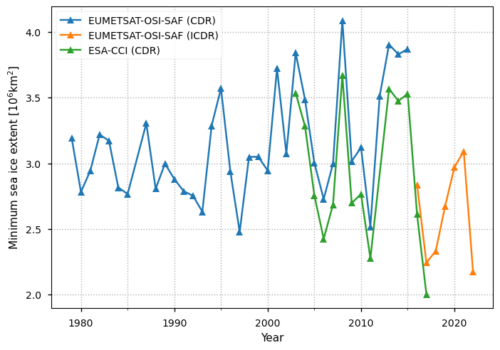
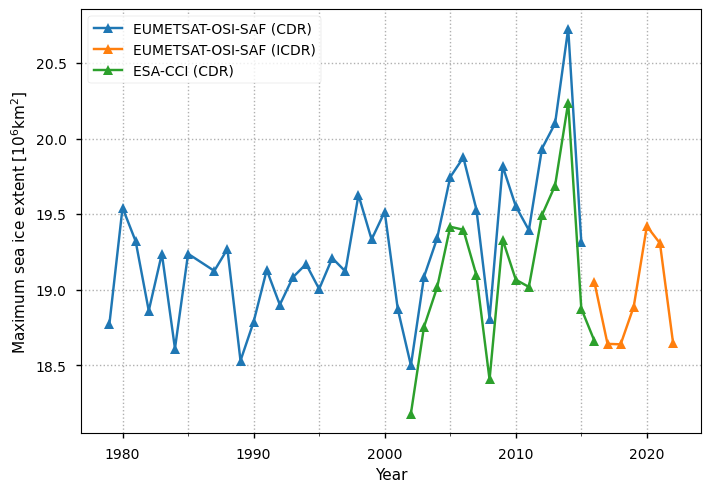

1.3.1. Assessment of the effect of climate change on sea ice using satellite sea ice concentration products#
Production date: 31-05-2024
Produced by: Nansen Environmental and Remote Sensing Center. Timothy Williams.
🌍 Use case: Assessing the effect of climate change on sea ice using satellite sea ice concentration products#
❓ Quality assessment question#
Can we see the effect of climate change using satellite sea ice concentration products?
📢 Quality assessment statement#
These are the key outcomes of this assessment
The Arctic sea ice extent and area show a clear downward trend in the 1979-2015 period covered by EUMETSAT OSI SAF CDR. The minimum extent shows a greater drop (3.5 million km\(^2\)) than the maximum (2.5 million km\(^2\)), although the maximum extent has a steadier drop. From the ESA CCI product and the EUMETSAT OSI SAF ICDR products, there are signs the drops could be continuing although it is difficult to draw any conclusion about this due to the shorter temporal interval (2015-2023).
On the other hand, the Antarctic sea ice minima and maxima in extent show an upward trend in the 1979-2015 period covered by EUMETSAT OSI SAF CDR. However, there is quite a lot of spread in these values. There are signs that both have been starting to drop in recent years, with 2017 and 2023 having notably low minima in extent, but again the shorter time interval (2015-2023) since then again makes it difficult to draw any conclusion about this.
📋 Methodology#
We use the sea ice concentration dataset, which has three products:
EUMETSAT OSI SAF CDR (1979-2015)
ESA CCI (2003-2017)
EUMETSAT OSI SAF ICDR (2016-2023)
For each product, we create time series of the sea ice extent and area. The seasonal cycles are plotted by year to see if it is changing with time. In addition the yearly minima and maxima of these are computed and plotted to see if they are changing with time.
The “Analysis and results” section is structured as follows:
1. Parameters, requests and functions definition
Definitions of parameters, download requests and functions.
Downloading and transforming the data.
Results.
📈 Analysis and results#
1. Parameters, requests and functions definition#
Define parameters and formulate requests for downloading with the EQC toolbox.
Define functions to be applied to process and reduce the size of the downloaded data.
Define functions to post-process and visualize the data.
1.1 Import libraries#
Import the required libraries, including the EQC toolbox.
Show code cell source
import warnings
import os
import matplotlib.pyplot as plt
from matplotlib.ticker import MultipleLocator
import matplotlib.dates as mdates
import xarray as xr
from c3s_eqc_automatic_quality_control import diagnostics, download
import numpy as np
from matplotlib import pyplot as plt
import pandas as pd
plt.style.use("seaborn-v0_8-notebook")
warnings.filterwarnings("ignore", module="cf_xarray")
1.2 Set parameters#
Set the time period to cover with start_year and stop_year.
Also specify sic_threshold - a grid cell is considered ice-covered if its concentration value (in %) exceeds this value.
Show code cell source
# Time
start_year = 1979
stop_year = 2023
# Conc threshold for calculating extent
sic_threshold = 15
1.3 Define requests#
Define the requests for downloading the sea ice concentration data using the EQC toolbox.
Show code cell source
collection_id = 'satellite-sea-ice-concentration'
conc_request = {
"cdr_type": "cdr",
"variable": "all",
"version": "v2",
"temporal_aggregation": "daily",
}
request_dict = {
# CDR
"EUMETSAT-OSI-SAF (CDR)": download.update_request_date(
conc_request | {"origin": "EUMETSAT OSI SAF", "sensor": "ssmis"},
start=f"{max(start_year, 1979)}-01",
stop=f"{min(stop_year, 2015)}-12",
stringify_dates=True,
),
# interim CDR for later years
"EUMETSAT-OSI-SAF (ICDR)": download.update_request_date(
conc_request | {"cdr_type": "icdr", "origin": "EUMETSAT OSI SAF", "sensor": "ssmis"},
start=f"{max(start_year, 2016)}-01",
stop=f"{min(stop_year, 2023)}-12",
stringify_dates=True,
),
# only CDR available for ESA-CCI
"ESA-CCI (CDR)": download.update_request_date(
conc_request | {"origin": "ESA CCI", "sensor": "amsr"},
start=f"{max(start_year, 2002)}-01",
stop=f"{min(stop_year, 2017)}-12",
stringify_dates=True,
),
}
1.4 Define function to cache#
compute_siconc_time_seriescomputes the extent, area, and the RMS error from a given sea ice concentration product.
Show code cell source
def compute_siconc_time_series(ds, sic_threshold):
ds = ds.convert_calendar("standard", align_on="date")
# grid cell area of sea ice edge grid
dims = ("xc", "yc")
dx = np.abs(np.diff(ds[dims[0]][:2].values))[0]
grid_cell_area = (dx ** 2) * 1.0e-6 # 10^6 km2
# get sea ice concentration and convert to ice/water classification
sic = ds.cf["sea_ice_area_fraction"]
sic_error = ds.cf["sea_ice_area_fraction standard_error"]
if sic.attrs.get("units", "") == "(0 - 1)":
sic *= 100
sic_error *= 100
# compute extent
dataarrays = {}
sic_class = xr.where(sic >= sic_threshold, 2, 1) # 1 = open water, 2 = ice
dataarrays["extent"] = grid_cell_area * (sic_class - 1).sum(dim=dims)
dataarrays["extent"].attrs = {
"standard_name": "sea_ice_extent",
"units": "$10^6$km$^2$",
"long_name": "Sea ice extent",
}
# compute area
dataarrays["area"] = grid_cell_area * .01 * sic.sum(dim=dims)
dataarrays["area"].attrs = {
"standard_name": "sea_ice_area",
"units": "$10^6$km$^2$",
"long_name": "Sea ice area",
}
# compute RMS error
dataarrays["rms_error"] = np.sqrt((sic_error ** 2).mean(dim=dims))
dataarrays["rms_error"].attrs = {
"standard_name": "root_mean_square sea_ice_area_fraction standard_error",
"units": "$10^6$km$^2$",
"long_name": "Root mean square sea ice area fraction standard error",
}
return xr.Dataset(dataarrays)
1.5 Functions to make time series plots against day of year#
rearrange_year_vs_dayofyearchanges the dataset from having a single time dimension to having two: the year and the Julian day of the year.make_subplotmakes one plot of a variable with a different line for each year (shown with a colorbar), and with the \(x\) axis being the Julian day of the year.plot_against_dayofyearcallsmake_subplotfor each of extent and area.
Show code cell source
def rearrange_year_vs_dayofyear(ds):
new_dims = ("year", "dayofyear")
ds = ds.convert_calendar("noleap")
ds = ds.assign_coords(
{dim: ("time", getattr(ds["time"].dt, dim).values) for dim in new_dims}
)
return ds.set_index(time=new_dims).unstack("time")
def make_subplot(ax, ds_doy, vname, color_map):
num_years = len(ds_doy.year)
for i,year in enumerate(ds_doy.year):
da = ds_doy.sel(year=year)[vname].squeeze()
ax.plot(da.dayofyear, da.values, color=color_map(i/(num_years-1)), label=year.item())
def plot_against_dayofyear(ds, cmap = "viridis"):
num_years = len(ds.year)
color_map = plt.get_cmap(cmap, num_years)
var_names = ["extent", "area"]
fig, axs = plt.subplots(len(var_names), 1, sharex=True)
for vname, ax in zip(var_names, axs.flatten()):
make_subplot(ax, ds, vname, color_map)
ax.set_ylabel(f"Sea ice {vname} [{ds[vname].units}]")
ax.xaxis.set_major_formatter(mdates.DateFormatter("%d %b"))
ax.xaxis.set_tick_params(rotation=45)
cbar = fig.colorbar(
plt.cm.ScalarMappable(
cmap=cmap,
norm=plt.Normalize(vmin=min(ds.year), vmax=max(ds.year)),
),
ax=axs.ravel().tolist(),
)
cbar.set_label('Year')
1.6 Functions to make time series plots of yearly minima and maxima#
full_year_only_resamplegets an extremum (maximum or minimum) of extent and area for each year.get_yearly_min_maxcallsfull_year_only_resampleand does some post-processing to give clearer variable names and attributes for the extrema.plot_yearly_extremesplots the values for a set of extrema for a given region against the year.
Show code cell source
def full_year_only_resample(ds, reduction, sel_dict=None):
"""
Calculate yearly reduction eg to get the yearly min or max of a time series
Parameters
----------
ds : xr.Dataset
reduction : str
eg min or max
Returns
-------
ds_reduced : xr.Dataset
resampled time series
"""
if sel_dict:
ds = ds.sel(sel_dict)
year_mask = ds["time"].resample(time="YE").count() > 150
return getattr(ds.resample(time="YE"), reduction)(), year_mask
def get_yearly_min_max(ds, **kwargs):
ds1 = ds.drop_vars(["rms_error"])
data = {}
for reduction in ["min", "max"]:
ds2, year_mask = full_year_only_resample(ds1, reduction, **kwargs)
data["year_mask"] = xr.DataArray(
year_mask.values, coords={"year": ds2.time.dt.year.values},
attrs={"description": "True if year has sufficient observations"})
for var_name in ds2.data_vars:
da = ds2[var_name]
atts = da.attrs
atts["standard_name"] = f"{reduction}_{atts['standard_name']}"
atts["long_name"] = f"{reduction.capitalize()}imum {atts['long_name'][0].lower()}{atts['long_name'][1:]}"
data[f"{reduction}_{var_name}"] = xr.DataArray(
da.values, attrs=atts, coords={"year": ds2.time.dt.year.values, "region": ds2.region.values})
return xr.Dataset(data)
def plot_yearly_extremes(datasets, region="northern_hemisphere", var_name="min_extent"):
fig, ax = plt.subplots(1, 1)
for product, ds in datasets.items():
year_mask = ds["year_mask"]
if product == "ESA-CCI (CDR)":
if var_name == "min_extent":
# make sure 2012 record Arctic minimum is included (exclude Antarctic minimum)
year_mask[ds.year.values == 2012] = (region == "northern_hemisphere")
# exclude Antarctic minimum in 2002
year_mask[ds.year.values == 2002] = (region == "northern_hemisphere")
# include Antarctic minimum in 2017
year_mask[ds.year.values == 2017] = (region == "southern_hemisphere")
if var_name == "max_extent":
# include Arctic maximum in 2017
year_mask[ds.year.values == 2017] = (region == "northern_hemisphere")
# make sure 2012 Antarctic maximum is included (exclude Arctic maximum)
year_mask[ds.year.values == 2012] = (region == "southern_hemisphere")
# exclude Arctic maximum in 2002
year_mask[ds.year.values == 2002] = (region == "southern_hemisphere")
ds2 = ds.sel(region=region).where(year_mask, drop=True)
da = ds2[var_name]
ax.plot(da.year, da.values, '^-', label=product)
ax.set_ylabel(f"{da.attrs['long_name']} [{da.attrs['units']}]")
ax.set_xlabel(f"Year")
ax.xaxis.set_minor_locator(MultipleLocator(5))
ax.tick_params(axis='x', which='minor', top=False)
ax.grid(axis='x', which='both', linestyle=':')
ax.grid(axis='y', which='both', linestyle=':')
_ = ax.legend()
2. Download and transform#
This is where the data is downloaded, transformed with compute_siconc_time_series, and saved to disk by the EQC toolbox. If the code is rerun the transformed data is loaded from the disk.
For plotting, it is then post-processed with either rearrange_year_vs_dayofyear (to be used by plot_against_dayofyear) or get_yearly_min_max (to be used by plot_yearly_extremes).
Show code cell source
download_kwargs = {
"drop_variables": (
"raw_ice_conc_values",
"smearing_standard_error",
"algorithm_standard_error",
"status_flag",
),
}
datasets_diagnostics = {}
datasets = []
for product, requests in request_dict.items():
for region in [
"northern_hemisphere",
"southern_hemisphere",
]:
print(f"{product = }, {region = }")
regional_requests = [request | {"region": region} for request in requests]
ds = download.download_and_transform(
collection_id, regional_requests,
transform_func=compute_siconc_time_series,
transform_func_kwargs={"sic_threshold": sic_threshold},
chunks={"year": 1},
**download_kwargs,
)
datasets.append(ds.expand_dims(region=[region]).compute())
datasets_diagnostics[product] = xr.concat(datasets, "region")
datasets = []
# post-process for plotting
datasets_diagnostics_rearranged = {}
datasets_diagnostics_minmax = {}
for product in request_dict:
datasets_diagnostics_rearranged[product] = rearrange_year_vs_dayofyear(datasets_diagnostics[product])
datasets_diagnostics_minmax[product] = get_yearly_min_max(datasets_diagnostics[product])
3. Results#
3.1 Arctic sea ice#
Below we plot the daily Arctic sea ice extent from 1979 to 2015 from the EUMETSAT-OSI-SAF CDR product. This is the product spanning the longest period. Clearly later years have lower extent than earlier ones with 2012 having the lowest minimum extent in this period. The minimum (September) extents show a much wider spread than those at other times of the year.
We also plot the sea ice area which follows a similar pattern but is about 2.5 million km\(^2\) lower than the extent.
Show code cell source
plot_against_dayofyear(datasets_diagnostics_rearranged["EUMETSAT-OSI-SAF (CDR)"].sel(region="northern_hemisphere"))

Below we plot the daily Arctic sea ice extent from 2002 to 2017 from the ESA-CCI CDR product. This is the product spanning the longest period. Like with the previous product earlier years generally have higher extents. Again the year with the lowest minima in this product is 2012, with 2007 and 2016 being notable lows. The years with the lowest maxima are 2017 and 2016.
We also plot the sea ice area which follows a similar pattern but is about 2.5 million km\(^2\) lower than the extent.
Show code cell source
plot_against_dayofyear(datasets_diagnostics_rearranged["ESA-CCI (CDR)"].sel(region="northern_hemisphere"))

Below we plot the daily Arctic sea ice extent from 2016 to 2023 from the EUMETSAT-OSI-SAF ICDR product. This is the product spanning the shortest period and there is no clear pattern present in it. The year with the lowest minima in this product is 2020.
We also plot the sea ice area which follows a similar pattern but is about 2.5 million km\(^2\) lower than the extent.
Show code cell source
plot_against_dayofyear(datasets_diagnostics_rearranged["EUMETSAT-OSI-SAF (ICDR)"].sel(region="northern_hemisphere"))

Below we plot the Arctic yearly minima in extent for all the products. There is a clear downward trend in the EUMETSAT-OSI-SAF CDR product, which spans the longest period. The drop is about 3 million km\(^2\) over the 20-year period from 1995 to 2015. There is a slower drop in the previous years, but it is less clear. This product has higher values than the ESA-CCI product illustrating the possible magnitude of the uncertainty in the products, which could be around 0.5 million km\(^2\). The EUMETSAT-OSI-SAF ICDR product is consistent with the CDR product, but it covers too short a time period to see any reliable trend.
Show code cell source
plot_yearly_extremes(datasets_diagnostics_minmax, var_name="min_extent")

Below we plot the Arctic yearly maxima in extent for all the products. There is a clear downward trend in the EUMETSAT-OSI-SAF CDR and ICDR products, which together span the full period. The drop is about 2 million km\(^2\) over the 44-year period from 1979 to 2023, which while lower than for the yearly minima is more steady. The EUMETSAT-OSI-SAF products again have higher values than the ESA-CCI product, again by around 0.5 million km\(^2\). Note that notably low sea ice minima (eg 2007, 2012) are preceded by notably low maxima (eg 2006, 2011).
Show code cell source
plot_yearly_extremes(datasets_diagnostics_minmax, var_name="max_extent")

3.2 Antarctic sea ice#
Below we plot the daily Antarctic sea ice extent from 1979 to 2015 from the EUMETSAT-OSI-SAF CDR product. This is the product spanning the longest period.The progression with year is not as clear as for the Arctic, and unlike in the Arctic many later years are among those with higher extents. Again unlike the Arctic, which had a higher spread around September, the spread of the extents is similar throughout the year.
We also plot the sea ice area which follows a similar pattern but is about 4.5 - 5 million km\(^2\) lower than the extent.
Show code cell source
plot_against_dayofyear(datasets_diagnostics_rearranged["EUMETSAT-OSI-SAF (CDR)"].sel(region='southern_hemisphere'))

Below we plot the daily Antarctic sea ice extent from 2002 to 2017 from the ESA-CCI CDR product. This product has a bit more spread around the time of the sea ice minimum (March) compared to the rest of the year. The year with the lowest minimum is 2017.
We also plot the sea ice area which follows a similar pattern but is about 4.5 - 5 million km\(^2\) lower than the extent.
Show code cell source
plot_against_dayofyear(datasets_diagnostics_rearranged["ESA-CCI (CDR)"].sel(region='southern_hemisphere'))

Below we plot the daily Antarctic sea ice extent from 2016 to 2023 from the EUMETSAT-OSI-SAF ICDR product. This is the product spanning the shortest period and there is no clear pattern present in it. The year with the lowest minima in this product is 2023.
We also plot the sea ice area which follows a similar pattern but is about 4.5 - 5 million km\(^2\) lower than the extent.
Show code cell source
plot_against_dayofyear(datasets_diagnostics_rearranged["EUMETSAT-OSI-SAF (ICDR)"].sel(region='southern_hemisphere'))

Below we plot the Antarctic yearly minima in extent for all the products. There is quite a spread and there seems to be a moderate upward trend up to about 2015 when the EUMETSAT-OSI-SAF CDR product ends. However the EUMETSAT-OSI-SAF ICDR which covers the later years has much lower minimum extents. It is difficult to say if this is physical or due to the change in product, especially as the ESA-CCI product finishes in 2017. Having said this, the ESA-CCI product also shows a moderate downward trend although it has a very large spread.
Show code cell source
plot_yearly_extremes(datasets_diagnostics_minmax, region="southern_hemisphere", var_name="min_extent")

Below we plot the Antarctic yearly maxima in extent for all the products. There is less spread than for the minima, and it is stable up to about 2000. After then there also seems to be a moderate upward trend up to about 2015. However the EUMETSAT-OSI-SAF ICDR product again has much lower maximum extents. It is difficult to say if this is physical or due to the change in product, especially as the ESA-CCI product finishes in 2017. The ESA-CCI product also shows a moderate upward trend although it has a very large spread, and its later years are consistent with the drop shown by the EUMETSAT-OSI-SAF ICDR product.
Show code cell source
plot_yearly_extremes(datasets_diagnostics_minmax, region="southern_hemisphere", var_name="max_extent")

ℹ️ If you want to know more#
Key resources#
Introductory sea ice materials:
Code libraries used:
C3S EQC custom functions,
c3s_eqc_automatic_quality_control, prepared by BOpen
References#
[1] Ivanova, N., Pedersen, L. T., Tonboe, R. T., Kern, S., Heygster, G., Lavergne, T., Sørensen, A., Saldo, R., Dybkjær, G., Brucker, L., & Shokr, M. (2015). Inter-comparison and evaluation of sea ice algorithms: towards further identification of challenges and optimal approach using passive microwave observations. The Cryosphere, 9(5), 1797-1817.
[2] Comiso, J. C., Cavalieri, D. J., Parkinson, C. L., & Gloersen, P. (1997). Passive microwave algorithms for sea ice concentration: A comparison of two techniques. Remote sensing of Environment, 60(3), 357-384.
[3] Buckley, E. M., Horvat, C., & Yoosiri, P. (2024). Sea Ice Concentration Estimates from ICESat-2 Linear Ice Fraction. Part 1: Multi-sensor Comparison of Sea Ice Concentration Products. EGUsphere, 2024, 1-19.